Engobe
Engobes are high-clay slurries that are applied to leather hard or dry ceramics. They fire opaque and are used for functional or decorative purposes. They are formulated to match the firing shrinkage and thermal expansion of the body.
Key phrases linking here: engobed, engobes, engobe - Learn more
Details
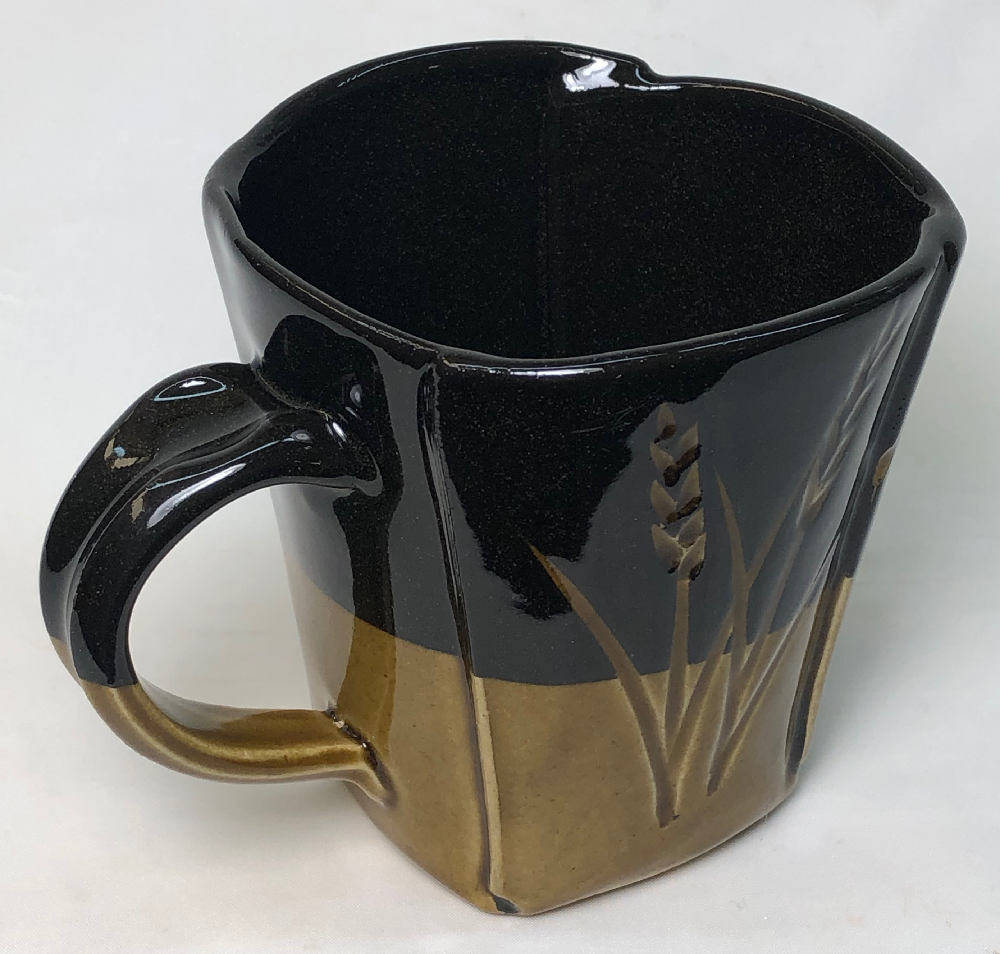
The power of a black engobe
This slab mug is made from a buff stoneware, M340. A black engobe was applied by pouring the inside and dipping the outside two-thirds of the way down. The mug was then dipped into a honey transparent, GA6-B.
A white or colored opaque-firing clay coating to alter its color or character or a clay body surface. The term "slip" is often used interchangeably with "engobe" but they are not actually the same. Generally, potters talk about slips in the context of decorating, even using the term as a verb. But engobes are employed, especially in industry, to hide underlying body - opacity is thus vital. Underglazes are a third related product, with them the emphasis is intense coloration (and also opacity). The tile industry uses the largest volumes of engobe by far, employing them as barriers between less-than-white bodies and the overlying glaze. Even locally available brown or red burning bodies can be made white using engobes, they almost always vitrify at much lower temperatures producing a stronger product. Another area of cost-saving is that glazes need less zircon opacifier (assuming that no zircon is needed in the engobe) over a white surface than a dark one.
The use of engobes adds steps (and time) to the production procedure. That being said, the benefits can also accelerate other parts of the process. In terracotta and stoneware processes, engobes are ideally applied to leather-hard ware (for best bonding). But in practice they are often applied to bisque ware, especially with terracotta tiles.
Engobes need to be fluid enough to pour and drain well but have a high enough thixotropy to gel and stay in place without drips after application. Perfecting the rheology (specific gravity, viscosity and thixotropy) of a slurry can be difficult and delicate, when starting out it is best to be conservative, tolerating a lower specific gravity. A valuable asset is a good wall-mounted variable-speed propeller mixer that can mix the slurry well but not so much that it pulls in air bubbles. Ideally, engobes need a specific gravity higher than glaze (often much higher) to dry as fast as possible. That means some deflocculant is needed. A specific gravity of 1.5 is a good starting point. Use enough deflocculant to make it too fluid and then bring it back to thixotropic using an addition of flocculant (e.g. Epsom salts). The system is very sensitive and it is easy to add too much - be patient adding only a little and waiting as it mixes. When right the slurry is fluid enough to apply evenly and drain well but then gels after a few moments (so you do not have to wait while it drips-drips-drips). In a gallon-size batch, this can mean additions of only drop(s) of flocculant or deflocculant to move it as needed. Trial application on pieces is the best way to determine if the rheology is right. Once learned, the whole process really is magic. One warning: If you overdo a flocculant addition when adjusting the slurry can become lumpy. Do not panic, the addition of a little deflocculant and propeller mixing will bring it back. But don't go back and forth too many times.
For tiles, engobes are applied as a curtain over a continuously moving production line or as a powder layer during the pressing of the tile itself. Potters would not generally have the equipment and expertise to apply engobes to dry ware (unless being painted on in a very layer). While it may appear possible to apply engobes to bisque ware (by adding CMC gum to harden and adhere them and VeeGum to gel the slurry somewhat), this is not advisable. The bond will be compromised as the engobe fire-shrinks on a body that has already done so. While thin layers may appear to work, they will likely fail with time because of internal stresses. That being said, kyanite in the recipe can be a secret weapon that makes this possible (since it expands during firing).
Engobe consistency will change on storage so mix thoroughly and readjust the degree of gel on each use. Once it has stabilized to the ideal consistency the slurry will gel on storage and resist thinning without propeller mixing. It will also power mix to what appears to be too thin of a consistency, but will gel up quickly to working behaviour. It is common to mix or stir the slurry before the dipping of each piece.
“Engobe” is a more specific term than “slip”. Potters use slips for decorative purposes, they are normally made from a clay of contrasting color (with added feldspar, bentonite, etc). Potters often 'traffic' slip recipes. By that term, we mean that people just try a bunch of recipes until they find one that appears to work (without considering technical considerations). Industrial engobes, on the other hand, are designed for a specific body or body type, technicians creating and maintaining them are faced with a balancing act and constant production issues.
Bonding is a key consideration when using engobes. The thicker the layer, or the more layers, the more issues there will be. The challenge starts at the initial application and drying stage. When applied to leather-hard ware the engobe must bond mechanically to the surface during drying and shrink with the body. To do this it needs enough clays and binders to hang on but not so much that it shrinks excessively and cracks during drying. Strangely, engobes having a plasticity (and stickiness) considerably higher than the body seem to bond best during drying. For this reason, it is common to see very high ball clay percentages and additions of as much as 10% bentonite (which slows down drying considerably). That being said, as an engobe's thickness increases its ability to impose its own shrinkage also increases, and, as it does so, it will crack to relieve the stress if applied too thickly. A note about ball clay: If you don't have the one shown in a recipe just try the ones you do have, most ball clays have very similar properties.
Engobes need to be thermal expansion compatible with the body also (but only after their fired shrinkages are matched). This is so that stresses coming with temperature change during service do not lead to flaking off in use. Of course, tableware will experience much more thermal stress than will floor tile, for example. When glaze is applied over an engobe, it is important that the thermal expansions complement each other. In tile, for example, the thermal expansion of the engobe needs to be between that of the body and the glaze.
Engobe recipes found online often look like glazes, but they should not. Engobes are like bodies, there should be little or no frit or boron source in the recipe (except possibly at low temperatures). Excessive flux will compromise opacity. More important, excessive flux will give the engobe a greater fired shrinkage than the body, introducing stresses that can severely test their bond and weaken the fired marriage. A vitreous engobe might have a fired shrinkage of 15%. Many stoneware bodies can be as little as 5-8%, vitreous bodies up to 10%. Earthenwares can exhibit a wide range of shrinkages depending on the firing temperature. Test bars of body and engobe can be fired at a range of temperatures to measure the fired shrinkages. Or, bi-clay strips can be made, these sandwich the body and engobe in a thin bar that curls during drying and firing to indicate fit or misfit. The lesson: Vitreous engobes on vitreous bodies, non-vitreous ones on non-vitreous bodies. As already noted, kyanite can be used to reduce firing shrinkage, making it possible to match a more vitreous engobe with a less vitreous body.
Thermal expansion compatibility is especially important in commercial products. Engobes cannot stand tensile stresses any better than glazes, so it is normal that an engobe should be under at least some thermal compression (not too much of course, especially if it is applied thickly). If ware is glazed (most common), fit is even more important. There are two interfaces to consider, body-to-engobe and engobe-to-glaze. Thus body/engobe compatibility should be tested separately (without the glaze) and the engobe/glaze compatibility tested (without the body, e.g. using the EBCT test). It is very important to avoid situations where the engobe is under tension from the body and the glaze under compression on the engobe (and vice versa). Engobes do not bond to the body as well as a glaze, so poor fit combinations are more likely to produce peeling and chipping at that interface. Because of the two interfaces and three expansions, it is easy to misdiagnose the cause of failure. The ideal situation is where the glaze has a lower thermal expansion than the engobe (thus being compressed by it) and the engobe lower than the body (and compressed by it). Example COE's reported to us by one tile manufacturer: Body- 200.7, engobe - 196 to 201, glossy glaze - 179 to 181.
Potters have options that are prohibitive in industry (because of cost and difficulty). For example, high percentages of zircon opacifier can be added for whiteness and opacity. Highly plastic and stickier mixes, lower specific gravities can be tolerated (they dry much slower). There is merit to creating a brushing version of your engobe, this enables close control of thickness and coverage. Use only CMC gum (not Veegum CER) to enable keeping the specific gravity as high as possible.
Related Information
The difference between a slip and an engobe
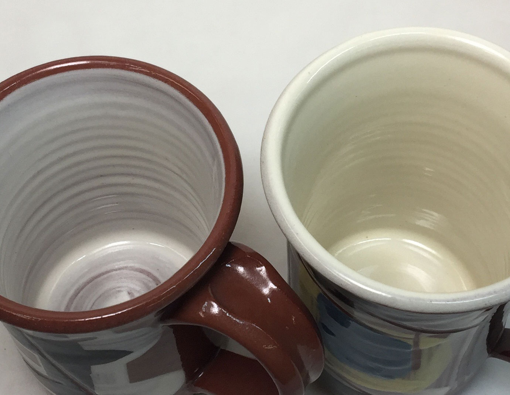
This picture has its own page with more detail, click here to see it.
L3685U slurry was applied to the insides of both of these mugs. But on the left it is a "slip", on the right an "engobe". Why? The left mug only has a thin layer, applied by painting a gummed version on (at leather hard stage). On the right a gelled slurry was poured into the leather hard piece, poured out and the rim dipped (creating a much thicker layer with more power to impose its own drying and firing shrinkage). So it is much more important that the latter be compatible with the underlying body. The EBCT test is used to measure how compatible the body and engobe are.
Cone 6 engobe becomes super white with 20% zircon added
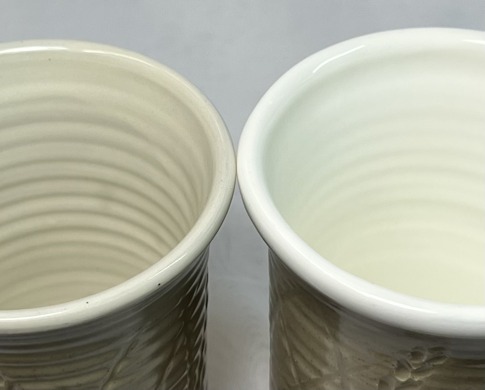
This picture has its own page with more detail, click here to see it.
Engobes were applied to the insides, and up over the rim, of these M340 pieces at the leather hard stage. They were then bisque fired, clear glazed and fired to cone 6. On the left is L3954B, no zircon was added. The one on the right is L3954S2, in has 20% Zircopax. These are part of a fitting effort to match the firing shrinkage of the body, M340, to a base engobe (and colored versions of it).
The covering power of an engobe is amazing. If they are not over-fluxed.
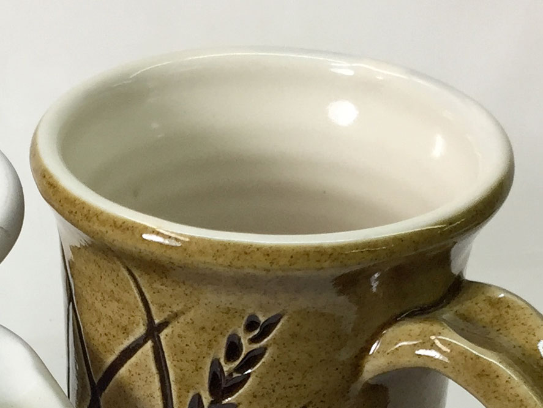
This picture has its own page with more detail, click here to see it.
This cone 6 mug is made from a black clay (containing 10% burnt umber). The engobe on the inside, L3954B, is covered by a clear glaze. The color is the same as if the engobe were on a white or buff firing stoneware. Engobes get their covering power from the fact that they do not melt. If you see an engobe with lots of frit it will likely melt too much, be suspicious.
The value of a white vitreous engobe over terra cotta at cone 03
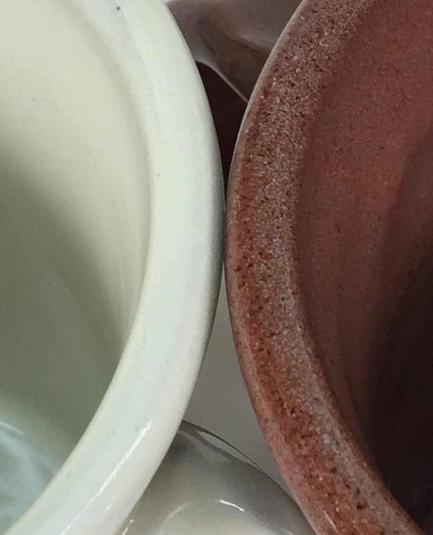
This picture has its own page with more detail, click here to see it.
At cone 03 many terra cottas will fire quite dense and stoneware-like. The lip of the mug on the left is covered with a vitreous white engobe (L3685U) under the glaze (G1916Q). Red bodies are much stronger at low temperatures, but do not lend themselves well to the bright glaze colors that work so well at that range. Putting an engobe on as a base enables decoration with colored slips and a clear over glaze. One caution: The engobe needs to have the same firing shrinkage as the body, to use a vitreous engobe the body needs a frit addition to be vitreous also. If you put a vitreous engobe on a porous earthenware its firing shrinkage will put it under tension and the poor bond with the body will mean quick or eventual failure.
What an engobe does for even glaze laydown
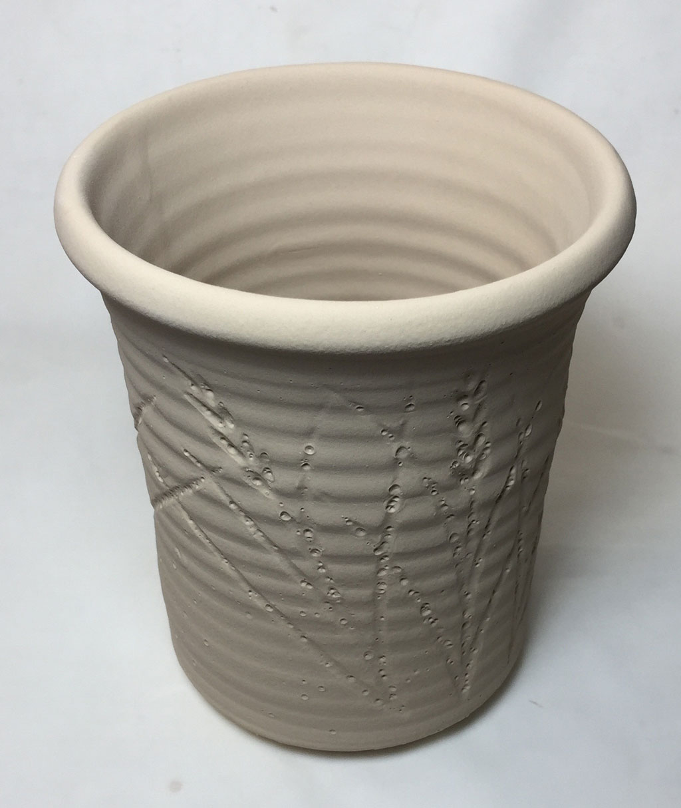
This picture has its own page with more detail, click here to see it.
This stoneware jar is made from a large particle size body with grog added. It was engobed on the inside and over the lip at the leather hard stage and bisque fired. Now it has been dip-glazed inside and out. Because the clay is so porous, lots of air must escape from inside the wall as the matrix soaks up water from the freshly applied glaze. But the air is being channeled into pathways and concentrated into surface irregularities created by the coarse particles in the matrix. At each of the escape sites a bubble appeared (then healed into a depression when it burst). But the engobe on the inside creates a homogeneous surface that distributes air escape uniformly, it does not have a single blister.
Stain-based black engobe is clean to use!
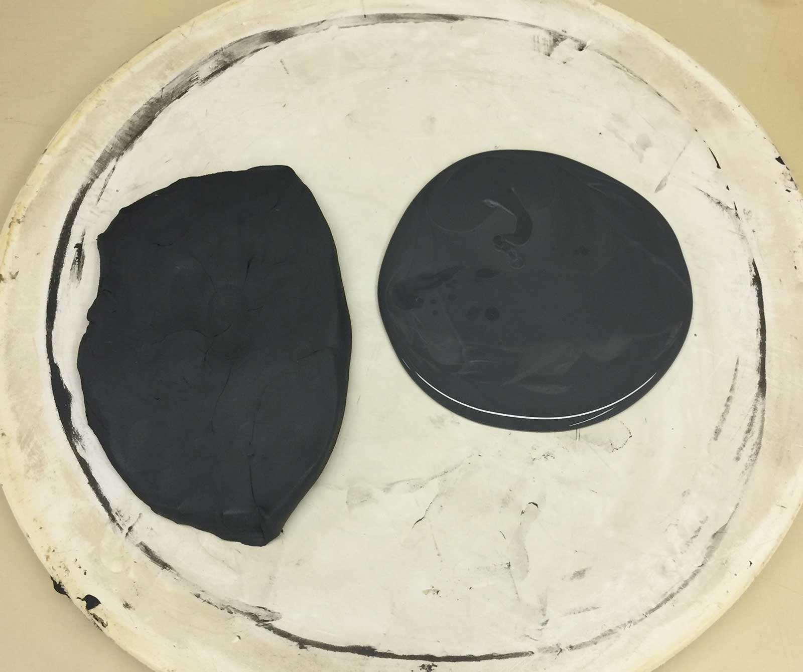
This picture has its own page with more detail, click here to see it.
Stains are fired, inert particles of a relatively large ultimate size. Unlike that, raw oxide powders, like iron or manganese, have much finer sizes and are thus extremely dirty to use. This plaster slab is being used to dewater these 15% black engobes for shrinkage testing. The slurry on the right has just been poured, the one on the left has just been peeled up (it was spread across almost the entire surface). Notice it has left no stain (the marks on the outer edge wash off easily). What does this mean? It means that using this engobe is much, much cleaner than using a body or slip colored using raw or burnt umber, iron, manganese or cobalt.
Stained engobes can be applied thinly yet fire opaque
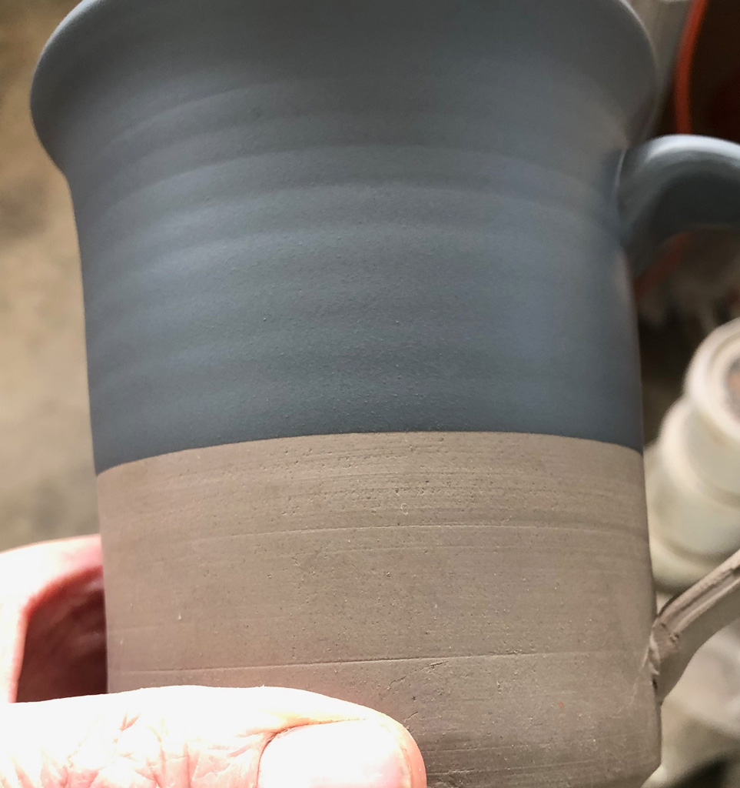
This picture has its own page with more detail, click here to see it.
This black engobe, L3954F, is on a cone 6 buff stoneware (at leather hard stage). It contains only 7.5% Mason 6600 black stain. How is that possible? Why do people add so much more to their underglazes? Because this recipe has been tuned to have the same degree of maturity as the body, it therefore fires totally opaque. This contrasts with other underglaze/engobe recipes containing significant frit, among other issues, their vitreous nature renders them translucent. Thus, up to 40% stain is needed to crowbar their opacity enough to intensify color. And a thicker application (that carries other issues).
This has dried long enough to be able to touch the engobe. Notice how thinly and evenly the coverage is. This cannot be done with a brush; it has to be done by dipping. This was possible because of another key factor: The slurry was adjusted, just before use, to be thixotropic. The thinner layer enables drying more quickly. This engobe was designed to be compatible with this body (meaning fewer issues with flaking during drying, better fire-fit).
A white engobe on dark and buff burning cone 6 stonewares
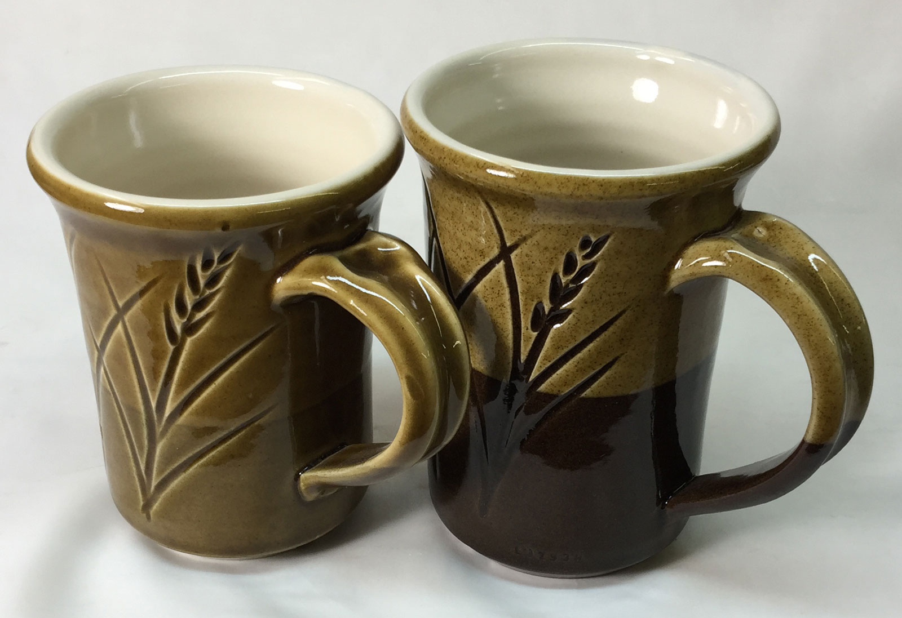
This picture has its own page with more detail, click here to see it.
Left is Plainsman M340. Right is M390. Each mug has been white-engobed inside (by pouring), using L3954B, and halfway down the outside (by dipping). The insides have been glazed using G2926B clear. The inside surface has more depth and a richer appearance than could be achieved using a white glaze (especially over the dark burning body). The outside of the left one is Alberta Slip base GA6-B. The outside glaze on the right is the clear plus 4% iron oxide. This technique of using the engobe enables porcelain-like functional surfaces on the insides and the visual contrasts and character on the outsides of the stoneware mugs.
Stage 1 of engobing a cone 6 red stoneware mug
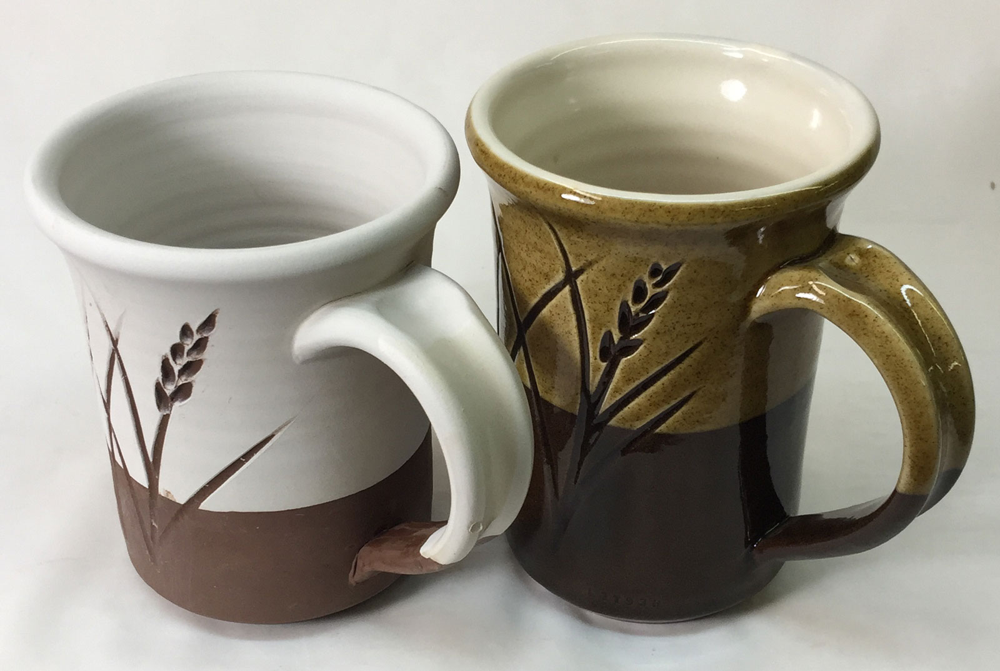
This picture has its own page with more detail, click here to see it.
On the right is what it will look like when fired with a clear glaze on the inside and amber-clear on the outside. On the left it has dried and is ready for a little fix-up before bisque firing.
Absolutely Jet-Black Cone 6 Engobe on M340
This could also be super white
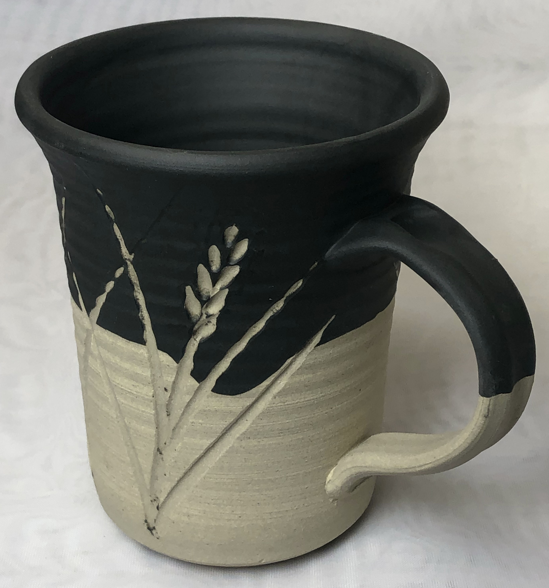
This picture has its own page with more detail, click here to see it.
This is the L3954B engobe. 15% Mason 6600 black body stain has been added (instead of the normal 10% Zircopax used for white). Of course, a cover glaze is needed for a functional surface. A lot of development work went into producing a recipe that fits this body, M340. It works even when thickly applied because it has the same fired maturity as the body. Lots of information is available on using L3954B (including mixing and adjustment instructions). Engobes are tricky to use. Follow the links below to learn more. L3954B is designed to work on regular Plainsman M340 (this piece), M390 and Coffee Clay. Most importantly, adjusting its maturity, and thus reducing firing shrinkage, is documented. These bodies dry better than porcelains and are much less expensive, so coating them with an engobe to get a surface like this makes a lot of sense. Ed Phillipson discovered this 80 years ago, enabling selling pieces made from these clays as white hotelware.
Why your supplier does not sell dipping engobes:
#1 Getting the thixotropy just right is hard.
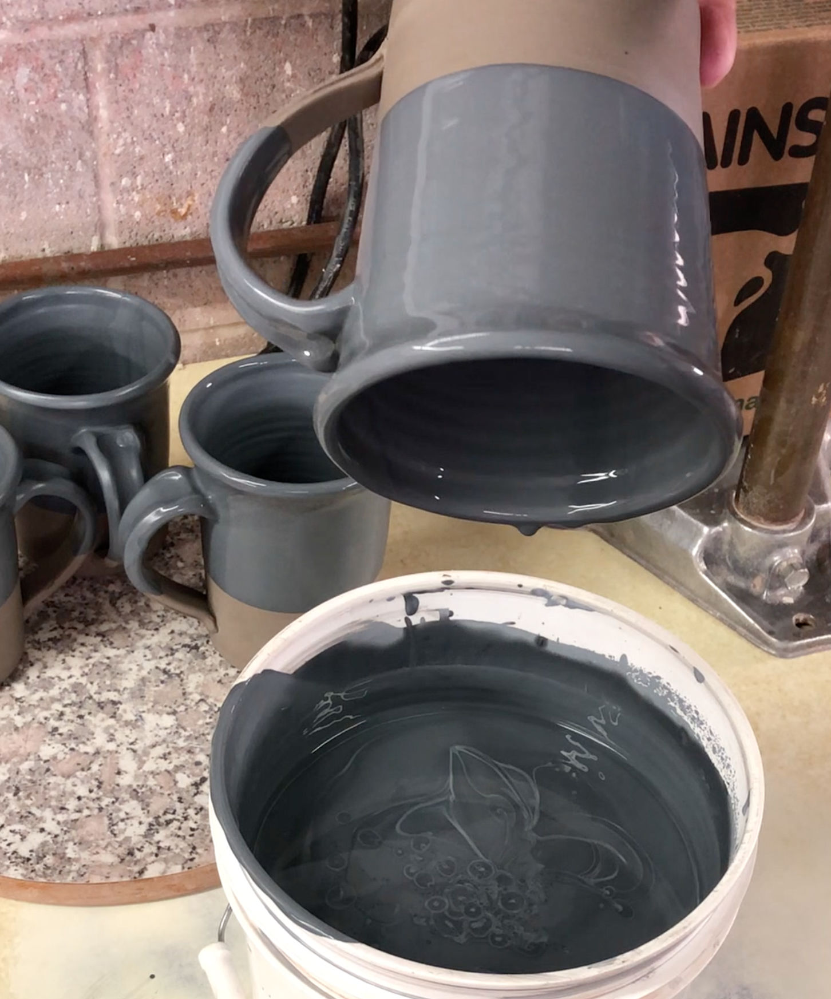
This picture has its own page with more detail, click here to see it.
Two things are happening simultaneously: The engobe is gelling and last few drips are falling away. I am rolling the mug just enough to encourage them (but so so much as to disrupt the gelling). Engobes are best applied to leather-hard ware and thus need to be thixotropic. The dipping process for each is to stir, pour-fill the mug, pour it out and push it upside down into the engobe. If I finish before the 10 second gel-time is up I get a perfectly even layer that does not move. Achieving this behaviour requires careful additions of Epsom salts. As the slip approaches the 10-second threshold even a slight bit more salts will turn it into a bucket of jelly (if that happens I add a drop or two of Darvan). This process works across a range of specific gravities (about 1.45-1.6), the higher the SG the trickier it is (but the faster it dries). I work at the low end, it’s easier..
Are dipping engobes useful? Incredibly. But the technical support that would be required to help customers learn the careful tuning of rheology is not something that any commercial glaze supplier would be prepared to do. No problem. DIY is the answer. This engobe is L3954B.
How stop dripping and running:
Add water! Then make it thixotropic.
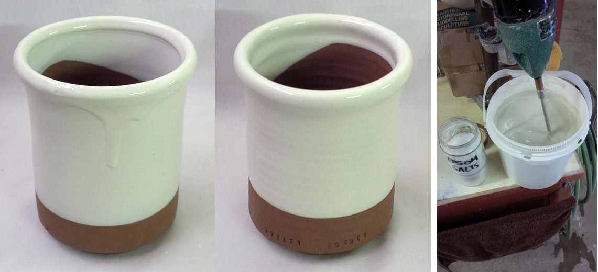
This picture has its own page with more detail, click here to see it.
The white slip on the left, L3685Z2, (applied to a leather hard cup) is dripping downward from the rim (even though it was held upside down for a couple of minutes!). Yet that slurry was very viscous with a 1.48 specific gravity. Why? Because it was not thixotropic. The fix? I watered it down to 1.46 (making it runny) and added pinches of powdered Epsom salts (while mixing vigorously) until it thickened enough to stop motion in about 1-2 seconds on mixer shut-off. But that stop-motion is followed by a bounce-back. That is the thixotropy. It is easy to overdo the Epsom salts (gelling it too much), I add a drop or two of Darvan to rethin it if needed. When the engobe is right, it gels after about 10 seconds of sitting, so I can stir it, dip and extract the mug, shake to drain it and then it gels and holds in place. Keep in mind, this is a pottery project. In industry, they deflocculate engobes to reduce water content and then impose thixotropy, but that is more technical than the average potter would want.
Here’s how I make a base brushing engobe
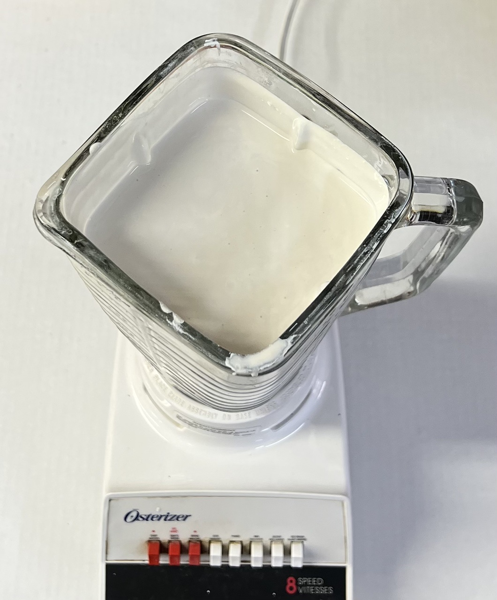
This picture has its own page with more detail, click here to see it.
This brushing engobe has already passed my EBCT test for use on the intended body. It is thick and gooey (because it contains CMC gum), so it is practically impossible to sieve. My regular propeller mixer is not able to break up the tiny agglomerates of New Zealand kaolin. But 30 seconds of blender mixing makes it as smooth as silk. To make this liter of brushing engobe, I use 800g of powder and 10g of CMC gum in 800g of water. Because of the very high clay content, this does not require Veegum to gel it. The CMC gum greatly improves the brushing properties. It also thins the slurry enough to enable its lower-than-normal water content, making it more suitable for painting onto leather-hard ware, often in as little as one coat.
Four drops of Davan deflocculant fixed the problem!
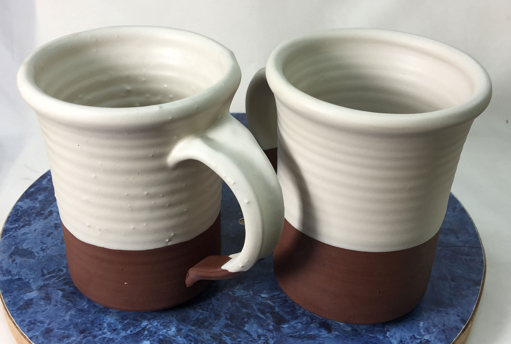
This picture has its own page with more detail, click here to see it.
This is a white engobe (L3954B) drying on two dark burning cone 6 stoneware leather-hard mugs (Plainsman M390). Those lumps are on the left cannot be screened out, they are agglomerates. That slip has excessive flocculant (powdered Epsom salts are added to gel it so that it stays put on the piece after dipping). About 4 drops of Darvan were added to one gallon of the slurry, this immediately made it smooth and a perfect consistency for application. It remains stable on ware (without runs). Engobes require tight control to have the right viscosity and thixotropy (which can be achieved over a range of specific gravities (about 1.45-1.6). When they are right they are a joy to use, when they are not ware is ruined.
How to test if an engobe fits a clay body
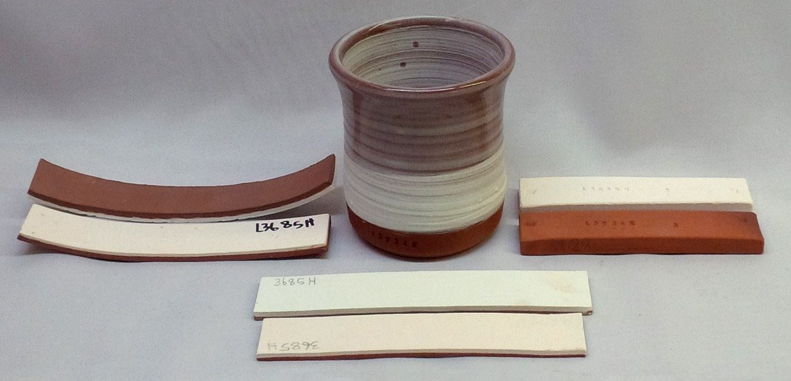
This picture has its own page with more detail, click here to see it.
This is part of a project to fit an engobe (slip) onto a terra cotta at cone 02 using the EBCT test.
Left: On drying the red body curls the bi-clay strip toward itself, but on firing it goes the other way!
Right: SHAB test bars of the white slip and red body enable comparing their drying and firing shrinkages.
Center back: A mug with the white engobe and a transparent overglaze. The slip is going translucent under the glaze because it is too vitreous. Its higher fired shrinkage curls the bi-clay bars toward itself. Reducing the frit will reduce the firing shrinkage and make it more opaque (because it will melt less).
Front: A different, more vitreous red body (Zero3 stoneware) fits the slip better (the strips dry and fire straight).
Bi-Clay strips test compatibility between engobe and body
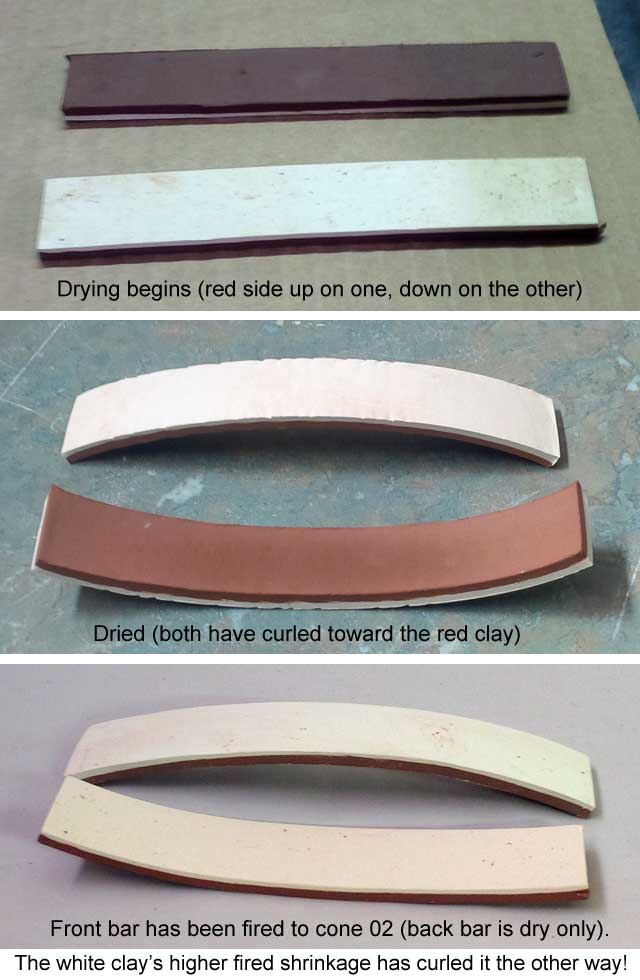
This picture has its own page with more detail, click here to see it.
Slips and engobes are fool-proof, right? Just mix the recipe you found on the internet, or that someone else recommends, and you are good to go. Wrong! Low fire slips need to be compatible with the body in two principle ways: drying and firing. Terra cotta bodies have low shrinkage at cone 06-04 (but high at cone 02). The percentage of frit in the engobe determines its firing shrinkage at each of those temperatures. Too much and the engobe is stretched on, too little and it is under compression. The lower the frit the less the glass-bonding with the body and the more chance of flaking if they do fit well (either during the firing or after the customer stresses your product). The engobe also needs to shrink with the body during drying. How can you measure compatibility? Bi-body strips. First I prepare a plastic sample of the engobe. Then I roll 4 mm thick slabs of it and the body, lay them face-to-face and roll that down to 4 mm again. I cut 2.5x12 cm bars and dry and fire them. The curling indicates misfit. This engobe needs more plastic clay (so it dry-shrinks more) and less frit (to shrink less on firing).
Potters can learn from how glazes are fit on ceramic tile
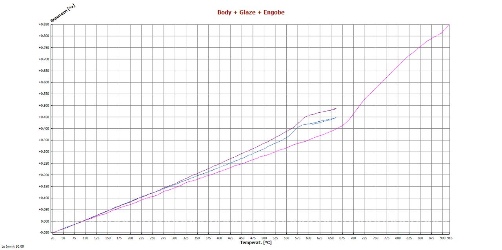
This picture has its own page with more detail, click here to see it.
These are thermal expansion curves for body, engobe and glaze (from a dilatometer, a device that measures it against increasing temperature). The upper line is the body. The center line is the engobe. The lower line is the glaze. The ceramic tile industry is very conscious, not only of glaze-fit but also engobe-fit. Engobes (slips) are employed to cover brown or red burning bodies so they glaze like a porcelain. Typically technicians tune the formulation of the engobe to have an expansion between the body and glaze. The body is highest so that during cooling, as it contracts, it puts a squeeze on the engobe (the engobe thus never finds itself under tension). The glaze has the lowest expansion, it is under a state of compression by the engobe (and slightly more by the body). This equilibrium enables the tile to wear for many years without crazing or shivering. Chart courtesy of Mohamed Abdelmagid.
Fitting an engobe to have the same firing shrinkage as the body
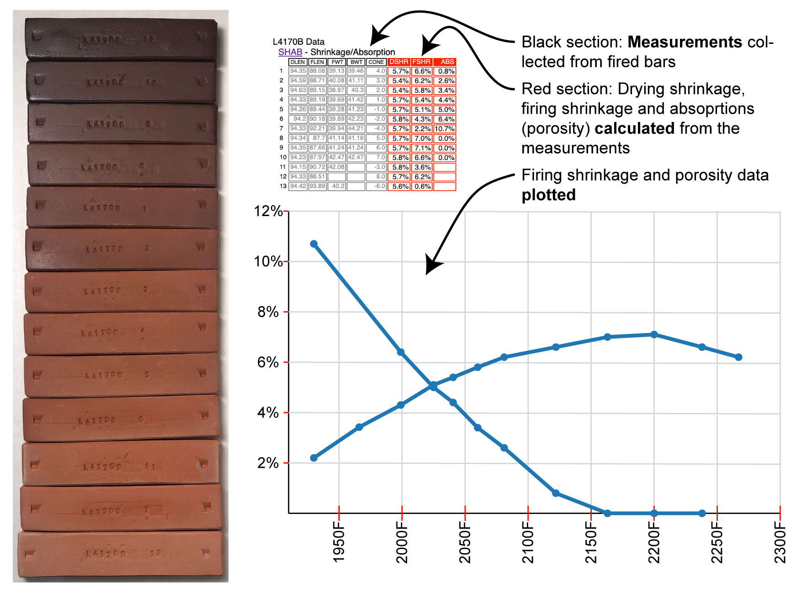
This picture has its own page with more detail, click here to see it.
The fired shrinkage of a clay can be measured accurately - and compared with that an engobe. Engobe-fit on terra cotta is very important because the bond is sintered, not glassy. These test bars show how this terra cotta body, L4170B, performs from cone 8 down to 06. Using the SHAB test procedure, I measured the dry and fired lengths of each bar and recorded the data in my Insight-live group account (it displays like the chart shown here). I compiled the same data for a super-white engobe, L3685Z3. Its calculated firing shrinkage came in much lower at all practical temperatures. At the target temperature of cone 02 a 5% addition of Ferro Frit 3110 increased the firing shrinkage from 2.1% to 5.5% (while the red body is 4.3%). To better the match I adjusted to 3% frit. What about matching the thermal expansion? I don’t have a dilatometer so I slurried up the engobe and used it as a body, it fits the same glazes without crazing or shivering (demonstrating they are under some compression).
Here is why you don't want an engobe to melt
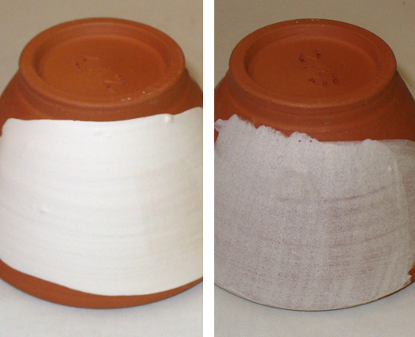
This picture has its own page with more detail, click here to see it.
Too much frit in an engobe and it will lose opacity and whiteness. The white slip on the left is an adjustment to the popular "Fish Sauce" slip recipe (L3685A: 8% Frit 3110 replaces 8% Pyrax to make it harder and fire-bond to the body better). The one on the right, L3685C, has 15% frit. Although applied at the same thickness, it is becoming translucent, moving it into glaze territory. That means it will have a far higher firing shrinkage than the body (a common cause of shivering at lips and contour changes). This slip is basically a very plastic white body. Since white burning slips are made from refractory materials they are not nearly as vitreous as red ones, at low fire they need help to mature and a frit is the natural answer. With the right amount of frit the fired shrinkage of body and slip can be matched and the slip will be opaque. This underscores the need to tune the maturity of an engobe to the body and temperature. Although zircon could be added to the one on the right to opacify and whiten it, that would not fix the mismatch in fired shrinkage between it and the body. And it would increase the price.
Glaze is shivering at the engobe-body interface
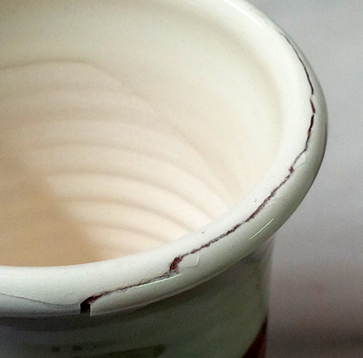
This picture has its own page with more detail, click here to see it.
Example of a glaze (G1916J) shivering on the rim of a mug. But the situation is not as it might appear. This glaze fits some bodies, crazes on others and shivers on yet others! This is a testament to how tricky it can be to fit glaze at low temperatures. But this is not a white glaze, it is a transparent over a white slip (or engobe). Alone on this red body this glaze appears to fit OK, but here it is exploiting the weaker body-engobe interface - this is where the release is taking place. This failure turned out to be a blessing, alerting us to the need to increase the expansion of the glaze a little to fit this body better (and enable its use with this engobe). This being said, the engobe likewise may be under too much compression, it may not contain enough silica.
Double-slip layer incised decoration: A challenge in slip-body fitting
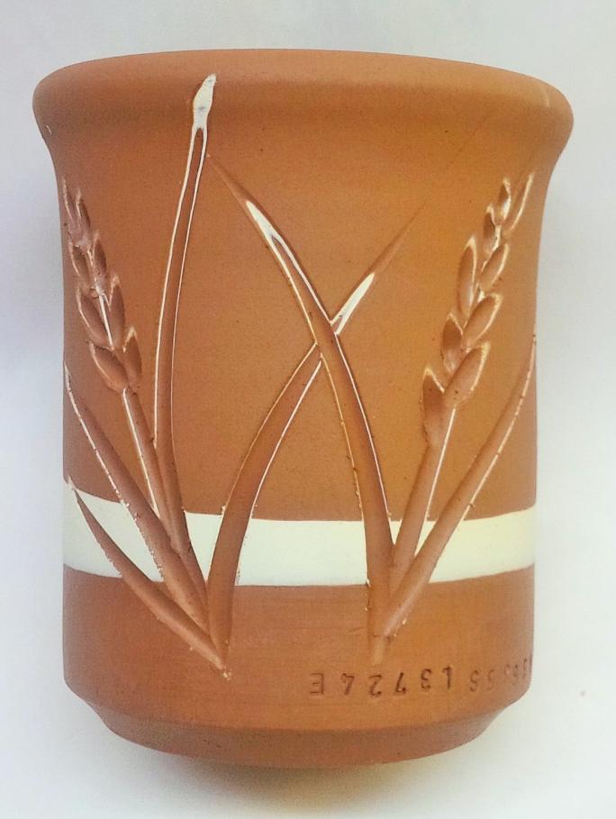
This picture has its own page with more detail, click here to see it.
An example of a white engobe (L3685T) applied over a red clay body (L3724F), then a red engobe (also L3724F) applied over the white. The incised design reveals the white inter-layer. This is a tricky procedure, you have to make sure the two slips are well fitted to the body (and each other), having a compatible drying shrinkage, firing shrinkage, thermal expansion and quartz inversion behavior. This is much more complex that for glazes, they have no firing shrinkage and drying shrinkage only needs to be low enough for bisque application. Glazes also do not have quartz inversion issues.
Bleeding underglaze. Why?
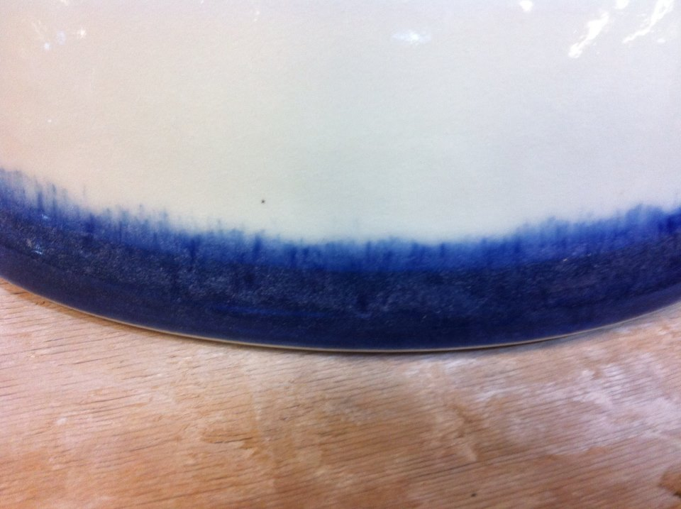
This picture has its own page with more detail, click here to see it.
This cobalt underglaze is bleeding into the transparent glaze that covers it. This is happening either because the underglaze is too highly fluxed, the over glaze has too high of a melt fluidity or the firing is being soaked too long. Engobes used under the glaze (underglazes) need to be formulated for the specific temperature and colorant they will host, cobalt is known for this problem so it needs to be hosted in a less vitreous engobe medium. When medium-colorant compounds melt too much they bleed, if too little they do not bond to the body well enough. Vigilance is needed to made sure the formulation is right.
Inner engobe separating at the rim
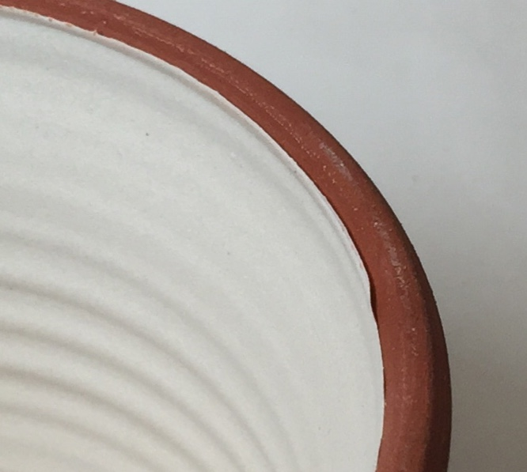
This picture has its own page with more detail, click here to see it.
This is the only place we have noted separation with this engobe and body. The engobe was gelled and the piece was drained upside down. So this edge was thicker. The separation occurs at the concave contour a couple of mm down (and breaks away to that point). The engobe is more plastic than the clay and thus shrinks more. Normally the extra stickiness from the extra plasticity is an asset, but not always.
An engobe is shivering off the rim of a low temperature mug
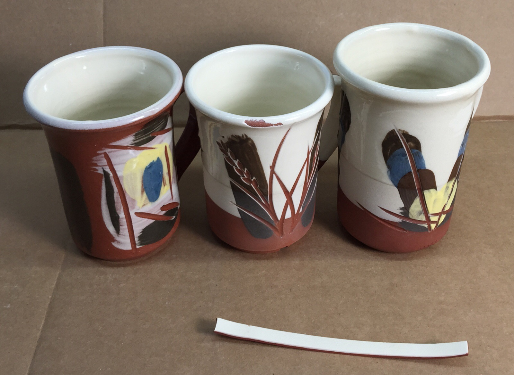
This picture has its own page with more detail, click here to see it.
Classic terra cotta bodies are not vitreous, so engobes used on them need to have similar low fired shrinkage. But when terra cottas are fired above cone 04 they start to mature and fired shrinkage increases quickly, flaking off engobes that do not have sufficient added frit (to increase their shrinkage). Even if an under-compression engobe can hang on, the extra stresses of an overglaze of lower thermal expansion can compromise the engobe:body bond. That has happened on the center mug. That engobe has less frit (10% vs. 15% for the others). The clear glaze on the left has high thermal expansion and is crazing, while the engobe:body bond can tolerate that it, is obviously not desirable.
Be careful when engobing ware:
Avoid acute angles. Don't overgel.
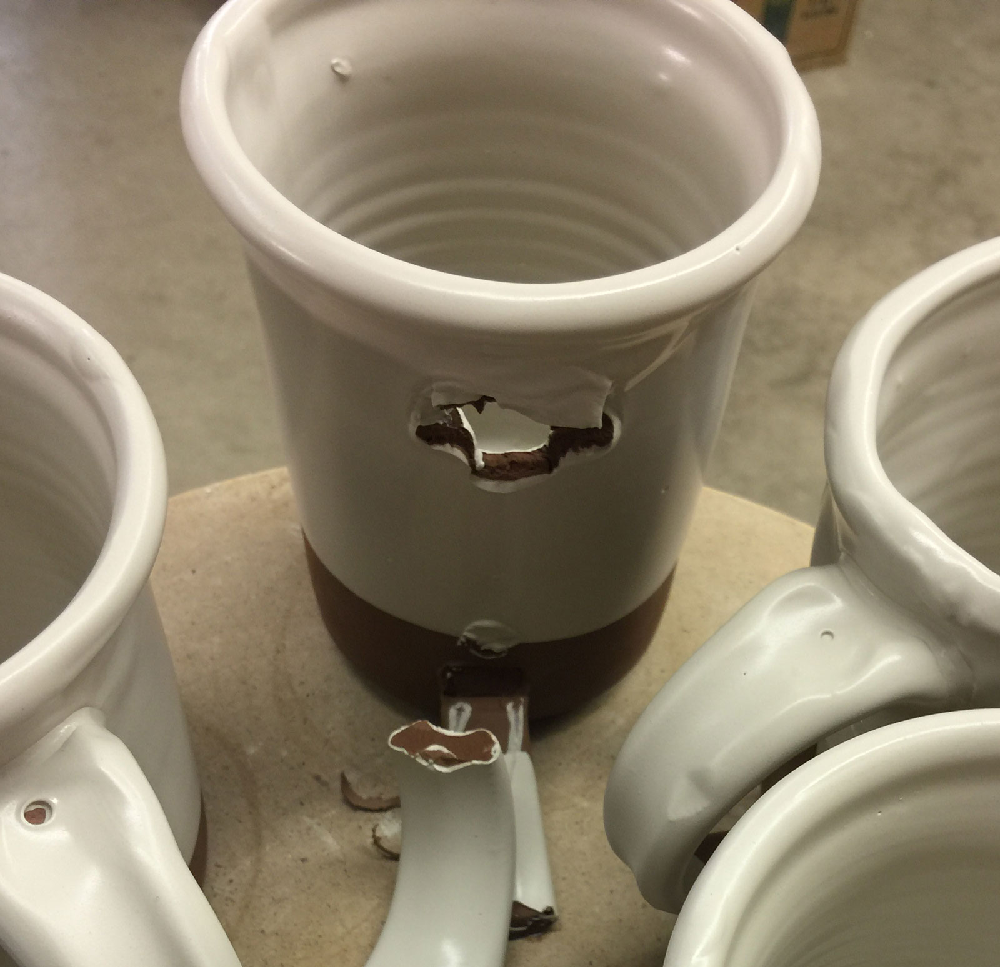
This picture has its own page with more detail, click here to see it.
The handle on this mug joined the wall at an acute angle. The wet engobe was applied to the leather-hard piece and took hours to dry (rewetting and softening it in the process). During that time the engobe was able to exploit the join and penetrate into it (the crack diverted straight into the soft weakened wall). Notice how the excessively gelled engobe has pooled at the join in the other two mugs also (although they did not fail). Engobes typically have a high water content and experiences like this teach us to take precautions when using them.
Worst case scenario for handle joins and successful drying
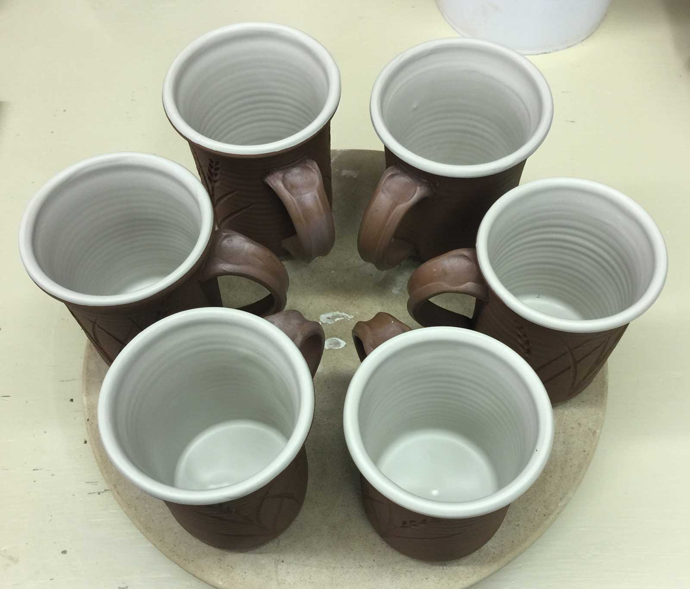
This picture has its own page with more detail, click here to see it.
These M390 mugs had progressed to stiff leather hard (after handles were applied, using just slip, and bases trimmed). A white engobe was then applied to the inside. It significantly softened the bodies of the mugs (to re-dry them to the point of being able to turn them over takes 4-6 more hours). This process sets up a big moisture differential between the mug and handle. "Even drying" is the key to success, so slowing down the handles is obviously needed. How? I apply wax emulsion (actually, I like Reed Wax), leaving just the inside handle-curves bare. That slows down drying enough to keep them even with the body of the mug. This method works so well that these do not even need covering during drying (even in our desert climate). Even drying is the goal - fast and even drying is much better than slow and uneven.
Is porcelain engobe good on stoneware?
Nope. This demonstrates what happens.
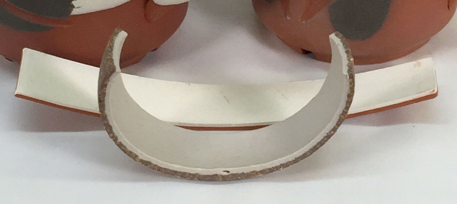
This picture has its own page with more detail, click here to see it.
This is how bad the fit can actually be. In the front is a bi-clay EBCT test strip of a grogged vitreous cone 10R sculpture clay sandwiched with a porcelain. After drying this bar was relatively straight. The back bar bent quite a bit even after bisque. But the bend on the front bar really shows the misfit. But this is not a thermal expansion issue where volume changes are measured in 100ths of a mm - these plastic bodies shrink 5-8% during firing, that is up to 8mm change in these 10cm long cars, that is the kind of volume change needed to make this happen. The porcelain has the higher fired shrinkage so it pulls the bar toward itself. The internal stress makes this bar a time bomb, waiting for a mechanical or thermal trigger to burst it into a hundred pieces. Admittedly, putting a thin layer of this porcelain onto a piece of heavy ware is not going to bend it - but the stresses of the porcelain being stretched-bonded will still be there, seeking relief (likely exhibited by cracking or flaking).
If you think one slip fits any body, think again
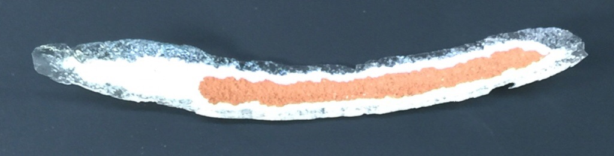
This picture has its own page with more detail, click here to see it.
This flake shivered off the rim of a low fire terra cotta mug. It is Fishsauce slip. It is about 2 inches long and has razor sharp edges. This is not the sort of thing you would want to be falling into your coffee or food and then eating! This flake did give evidence that it was loosening so there was little danger of me consuming it, but smaller flakes can go unnoticed. Slips (or engobes) must be drying compatible, have the same firing shrinkage, the same thermal expansion and be quartz inversion compatible with the body. It is easy to ignore all that and pretend that it works, but the bond between engobe and body is fragile at low fire and easily compromised by the above incompatibilities. Slips must be fitted to the specific body, glaze and temperature; that involves a testing program and often a little chemistry. I have documented online how to I adapted this slip to Plainsman Terrastone 2 using my account at insight-live.com.
Glaze under excessive compression can flake off the engobe
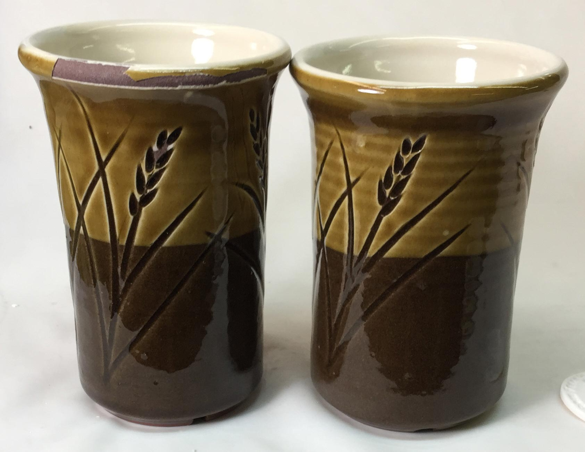
This picture has its own page with more detail, click here to see it.
The amber glaze on the outside of the left mug contains 20% super-low thermal expansion Ferro Frit 3249 as the melter. With no underlying engobe it can form enough of a bond with the body that it does not flake off at the rim (even though it is under excessive compression because its low thermal expansion). This flaking is called "shivering". The engobe, which does not melt like a glaze, has a more fragile bond with the body (and the glaze is pushing enough to make that bond fail). The mug on the right employs 20% Frit 3195 melter instead, producing a glaze that fits better. I hammered both of these rims repeatedly with a metal object to stress them, that one on the right definitely fits better.
What happens when you dip-apply an engobe to dry ware
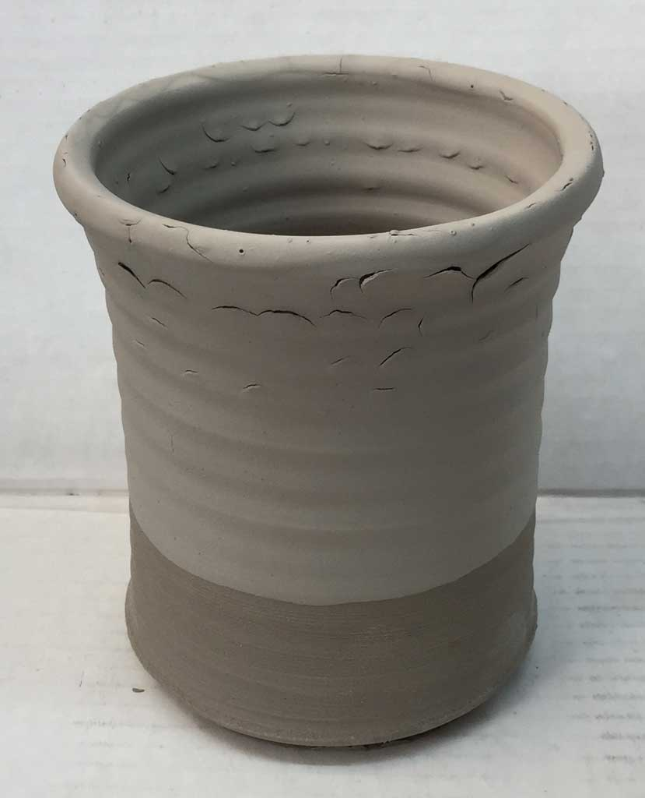
This picture has its own page with more detail, click here to see it.
This engobe has high plasticity, high water content and is sticky, it contains no gum and is intended for use on leather-hard ware. The leather hard clay absorbs a little of the water from the engobe (softening somewhat) and just waits for it to catch up. Then the two shrink and dry together, forming a good bond. If the piece is dry, however, the wet engobe quickly slakes and wets the surface, pulling pieces away as it shrinks. Of course, the thick application here has exacerbated the situation.
Why your supplier does not sell dipping engobes:
#2: They must be tuned to match body fired shrinkage
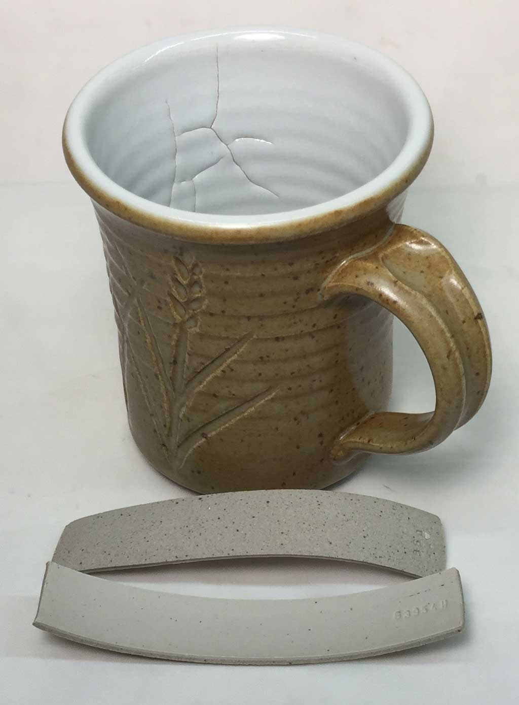
This picture has its own page with more detail, click here to see it.
The white engobe on the inside of this mug does not fit (in shrinks more than the body during firing), that is what these cracks are about. The misfit can be demonstrated using EBCT test bars (shown in the foreground). This pair sandwich the engobe and body as a bi-clay strip, they are dried and fired with alternative sides up. A bend demonstrates differences in the fired shrinkage of body and engobe. On drying these stayed relatively flat but after firing at cone 10R, the engobe's higher shrinkage pulled them concave. On this mug, made from the same clay and engobe, the latter has done likewise, shrinking more than the body and creating a crack pattern that even the glaze could not hide. This was a development version of L3954N that contained too much nepheline syenite.
Are dipping engobes useful? Incredibly. DIY is the only current way to use them.
This is what happens when applying a non-gummed engobe or underglaze to bisque ware
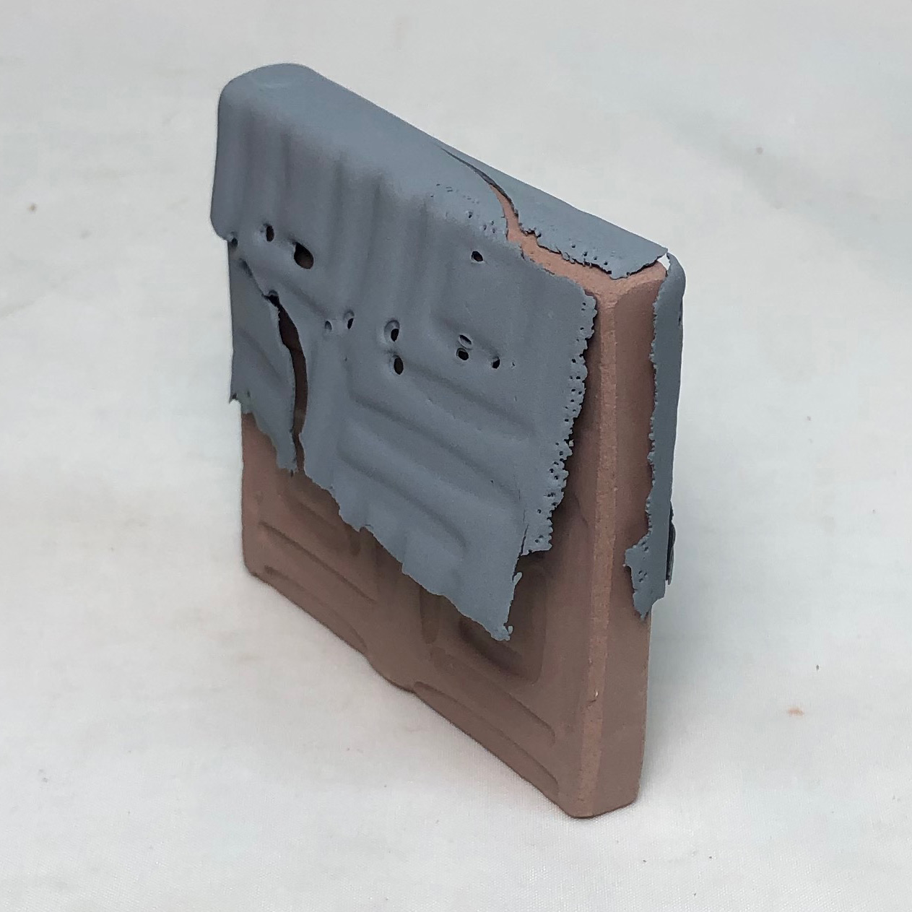
This picture has its own page with more detail, click here to see it.
The drying shrinkage of engobes and underglazes (and stickiness that goes with that) are important for adherence for application at the leather hard stage (they do not melt like glazes so do not glass-bond to the body). Wet adherence and shrinking together with the body during drying enhance the otherwise fragile interface. But not on bisque ware. If, however, the engobe is gummed it can appear to adhere to the bisque - but the fired bond with the body will not be as good as when applied at leather hard stage. Some underglazes employ calcined clays to minimize shrinkage for better compatibility with bisque, but it is still difficult to understand how they could develop any sort of quality fired bond!
White engobe flaking off terra cotta tiles
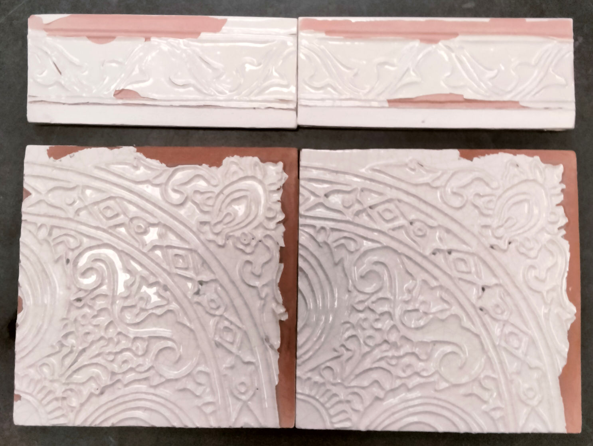
This picture has its own page with more detail, click here to see it.
Ideally, engobes are applied at leather hard stage. Their body-like makeup enables a plastic bond (#1) and their body-matching fired shrinkage (#2) and COE (#3) maintain that bond through the firing. That being said, many companies turn this logic on end and apply engobes at the bisque stage - where mechanism #1 is missing and they ignore fired fit #2 and #3. An example is terra cotta tile, companies buy it in bisque form, apply the engobe and then a glaze over that. And somehow it works! Or, at least, appears to work. But here is a time it does not. And how often are the tiles flaking time bombs?
How do this company, and others, get away with this most of the time? One secret is initial laydown - This mix is converted to paint by the addition of CMC gum. Second, it is sprayed on in an even and just thick enough layer. Third, 10% frit is added, enough to start melting (usually augmented by high zircon content), this can crowbar adhesion enough. These measures, most of the time, are enough it ignore #2 and #3 and so the item survives firing and light-duty use.
This company does not have the flexibility to do the ideal, they don't make the tile. What can they do? Discover the right balance between adhesion and fired fit. Do EBCT testing by cutting a tile into thin slices, applying the slip and noting the bend. If the fit is way off then start testing using the L3685Z5 recipe, tuning the amount of frit to get best compatibility. Then increasing it until too much opacity is lost or flaking occurs. Then decide on a compromise percentage between bond and fit.
Inbound Photo Links
|
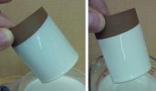 The same engobe. Same water content. What is the difference? |
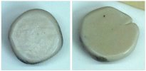 How much does a glaze need to melt before it sticks to the body well? |
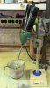 A must-have: Laboratory variable speed propeller mixer |
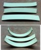 When two clays are joined are they compatible? |
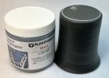 Brushing engobe fitted to this white porcelain turns it black |
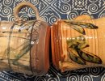 Transparent over-glaze for cone 6 stoneware Is a good one even possible on brush decorated ware? |
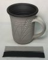 Make a black engobe to fit your stoneware perfectly |
Links
| Articles |
Monoporosa or Single Fired Wall Tiles
A history, technical description of the process and body and glaze materials overview of the monoporosa single fire glazed wall tile process from the man who invented it. |
| Glossary |
Body glaze Interface
In ceramics, the zone of adherence between glaze to the underlying body is called the clay-glaze interface. The integrity of this interface is important to strength and functionality. |
| Glossary |
Firing Shrinkage
During drying, clay particles draw together and shrinkage occurs. During firing the matrix densifies and shrinkage continues. More vitreous bodies shrink more. |
| Glossary |
Slip Trailing
A technique used by potters to decorate ware. Neutral and colored slips, clay in thick paste form, are trailed onto the ware (in raised lines and strokes) to create tactile designs. |
| Glossary |
Underglaze
Understand pottery underglazes: Why they brush differently, how they fire, why clears fail over them, and how to make your own recipes. In technical rather than art language. |
| Glossary |
Thixotropy
Thixotropy is a property of ceramic slurries of high water content. Thixotropic suspensions flow when moving but gel after sitting (for a few moments more depending on application). This phenomenon is helpful in getting even, drip-free glaze coverage. |
| Glossary |
Terra Sigilatta
Terra Sigilatta is a sedimentation process used by potters to remove coarse particles from a clay powder. It enables burnishing and gloss surfaces without the use of glaze. |
| Media |
How to Apply a White Slip to Terra Cotta Ware
I will show you some secrets of making a base engobe (or slip) apply to leather hard terracotta ware in a thick, perfectly even layer. |
| Media |
Adjusting the Thixotropy of an Engobe for Pottery
How to fine-tune the thixotropy of a ceramic engobe for pottery |
| Tests |
Engobe Body Compatibility Test
A bi-clay test strip curls to demonstrate the drying and fired compatibility or fit of an engobe (or slip) on a ceramic body or of two bodies for marbling. |
| Recipes |
L3954N - Cone 10R Base White Engobe Recipe for stonewares
Cone 10 reduction black engobe for stonewares (not porcelains). |
| Hazards |
Manganese in Clay Bodies
Manganese is used to stain clays (using black) and to impart fired speckling (as a decorative effect). It is dangerous? |
| URLs |
https://www.smac.it/en/dettaglio.php?idprod=220
Reverso engobe printer for tile backs Roller machine, for printing in the bottom part of the tiles passing on the glazing line. |
| URLs |
https://www.maycocolors.com/color/fired/stoneware-engobes/
Mayco Stoneware Engobes They describe them as "a great option for those who want the look of other clay bodies but don’t want to add another clay to their studio. Engobes can transform a red clay body into white or a white clay body into black". They claim it is possible to apply to wet clay, greenware or bisque, and fire from cones 5-10. Also sold by other suppliers (who do not identify them as Mayco on pages). |
 PayPal | No tracking, No ads, No paywall, No transient content! Just organized, concise information constantly updated and improved. Was this helpful? Consider supporting me. |
| By Tony Hansen Follow me on        |  |
Got a Question?
Buy me a coffee and we can talk 

https://digitalfire.com, All Rights Reserved
Privacy Policy